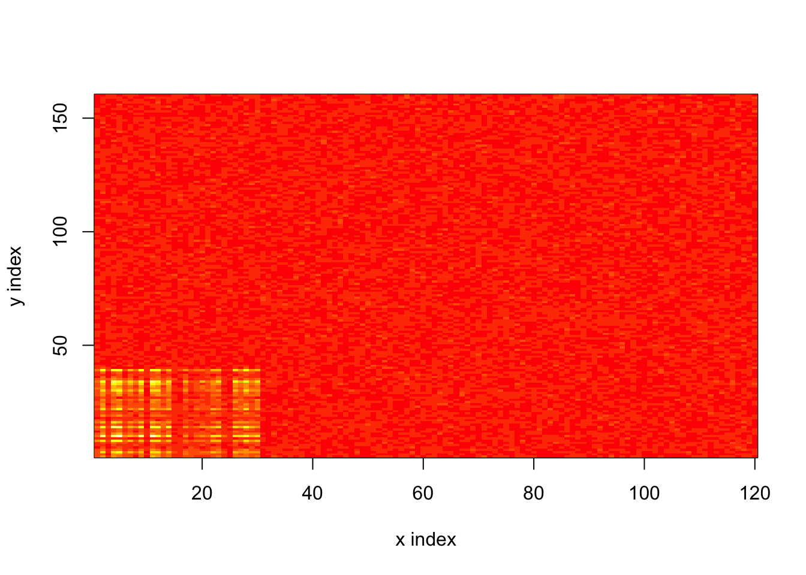

Last updated: 2019-02-13
workflowr checks: (Click a bullet for more information) ✔ R Markdown file: up-to-date
Great! Since the R Markdown file has been committed to the Git repository, you know the exact version of the code that produced these results.
✔ Environment: empty
Great job! The global environment was empty. Objects defined in the global environment can affect the analysis in your R Markdown file in unknown ways. For reproduciblity it’s best to always run the code in an empty environment.
✔ Seed:
set.seed(20180714)
The command set.seed(20180714) was run prior to running the code in the R Markdown file. Setting a seed ensures that any results that rely on randomness, e.g. subsampling or permutations, are reproducible.
✔ Session information: recorded
Great job! Recording the operating system, R version, and package versions is critical for reproducibility.
✔ Repository version: 0c4f845
wflow_publish or wflow_git_commit). workflowr only checks the R Markdown file, but you know if there are other scripts or data files that it depends on. Below is the status of the Git repository when the results were generated:
Ignored files:
Ignored: .DS_Store
Ignored: .Rhistory
Ignored: .Rproj.user/
Ignored: docs/.DS_Store
Ignored: docs/figure/.DS_Store
Untracked files:
Untracked: analysis/count_preproc_r1.Rmd
Untracked: analysis/gd_notes.Rmd
Untracked: code/count_sim.R
Untracked: code/pathways.R
Untracked: data/lowrank/
Untracked: data/tmp14.rds
Untracked: data/tmpdata.rds
Untracked: data/tmplfsr.rds
Untracked: docs/figure/count_notes.Rmd/
Untracked: temp_debug.RDS
Let’s say that we’re interested in finding structure in a matrix of counts \(Y\). The usual approach is to set \(X = \log(Y + \alpha)\) for some pseudocount \(\alpha > 0\) and then look for low-rank structure in \(X\).
Here I propose a different method that uses ashr to shrink the counts \(Y_{ij}\).
One can consider the individual counts \(Y_{ij}\) as Poisson random variables with (unknown) rate parameters \(\lambda_{ij}\). And in fact, it’s structure in \(\Lambda\) that we’re primarily interested in, not structure in \(Y\).
The simplest model is that \[ \Lambda = \exp(LF'), \] but in most applications one wouldn’t expect the matrix of log-rates to be low-rank. A more useful model puts \[ \Lambda = \exp(LF' + E), \] where \(E_{ij} \sim N(0, \sigma_{ij}^2)\) (with some structure in the matrix of variances \(\Sigma\)).
I propose a three-step approach to estimating \(LF'\):
Since we’re really interested in \(\Lambda\) (not \(Y\)), I propose that we first estimate \(\Lambda\) using ashr. The ASH model is \[ Y_{ij} \sim \text{Poisson}(\lambda_{ij});\ \lambda_{ij} \sim g, \] where \(g\) is a unimodal prior to be estimated. (One can also run ashr separately on each row or column of \(Y\) to get row-wise or column-wise priors.) Conveniently, ashr directly gives estimates for posterior means \(\mathbb{E} (\lambda_{ij})\) and posterior variances \(\text{Var}(\lambda_{ij})\).
Transform the ASH estimates using the approximations \[ X_{ij} := \mathbb{E} (\log \lambda_{ij}) \approx \log \mathbb{E}(\lambda_{ij}) - \frac{\text{Var}(\lambda_{ij})}{2(\mathbb{E}(\lambda_{ij}))^2}\] and \[ S_{ij}^2 := \text{Var} (\log \lambda_{ij}) \approx \frac{\text{Var}(\lambda_{ij})}{(\mathbb{E}(\lambda_{ij}))^2} \] (Importantly, the posterior means are all non-zero so that one can directly take logarithms. No pseudo-counts are needed.)
Run FLASH on the data \((X, S)\) with the additional variance in \(E\) specified as a “noisy” variance structure. In other words, the FLASH model is \[ X_{ij} = LF' + E^{(1)} + E^{(2)} \] where \(E_{ij}^{(1)} \sim N(0, S_{ij}^2)\) (with the \(S_{ij}\)s fixed) and \(E_{ij}^{(2)} \sim N(0, 1 / \tau_{ij})\) (with the \(\tau_{ij}\)s to be estimated). (And, as usual, there are priors on each column of \(L\) and \(F\).) The variance structure in \(E^{(2)}\) matches the assumed noise structure in \(\log (\Lambda)\).
To illustrate the approach, I consider a very simple example with a low-intensity baseline and a block of higher intensity:
set.seed(666)
n <- 120
p <- 160
log.lambda <- (-1 + outer(c(2 * abs(rnorm(0.25 * n)), rep(0, 0.75 * n)),
c(abs(rnorm(0.25 * p)), rep(0, 0.75 * p)))
+ 0.5 * rnorm(n * p))
Y <- matrix(rpois(n * p, exp(log.lambda)), n, p)
# Define some variables to make analysis easier.
hi.rows <- rep(FALSE, n)
hi.rows[1:(n / 4)] <- TRUE
hi.cols <- rep(FALSE, p)
hi.cols[1:(p / 4)] <- TRUE
# Show heatmap.
image(x = 1:n, y = 1:p, z = log.lambda, xlab = "x index", ylab = "y index")
| Version | Author | Date |
|---|---|---|
| 38224ab | Jason Willwerscheid | 2019-02-13 |
The usual approach would run FLASH as follows.
# Use my own branch due to bug in stephens999/master.
devtools::load_all("~/Github/ashr")Loading ashrdevtools::load_all("~/Github/flashier")Loading flashierfl.log1p <- flashier(log1p(Y), var.type = 0,
greedy.Kmax = 10, verbose = 1)Initializing flash object...
Adding factor 1 to flash object...
Adding factor 2 to flash object...
Adding factor 3 to flash object...
Factor doesn't increase objective and won't be added.
Nullchecking 2 factors...
Wrapping up...
Done.My proposed approach is the following.
# 1. Get ASH estimates for lambda (posterior means and SDs).
Y.ash <- ashr::ash(betahat = rep(0, n * p), sebetahat = 1,
lik = ashr::lik_pois(as.vector(Y)), mode = 0,
method = "shrink")
pm <- Y.ash$result$PosteriorMean
psd <- Y.ash$result$PosteriorSD
# 2. Transform to log scale.
X <- matrix(log(pm) - psd^2 / pm^2, n, p)
S <- matrix(psd / pm, n, p)
# 3. Run FLASH.
fl.ash <- flashier(X, S = S, var.type = 0,
greedy.Kmax = 10, verbose = 1)Initializing flash object...
Adding factor 1 to flash object...
Adding factor 2 to flash object...
Adding factor 3 to flash object...
Factor doesn't increase objective and won't be added.
Nullchecking 2 factors...
Wrapping up...
Done.For comparison, I also run ashr separately on each column of \(Y\).
colwise.pm <- array(0, dim = dim(Y))
colwise.psd <- array(0, dim = dim(Y))
for (i in 1:p) {
# For a fair comparison, I use the same grid that was selected by Y.ash.
col.ash <- ashr::ash(betahat = rep(0, n), sebetahat = 1,
lik = ashr::lik_pois(Y[, i]), mode = 0,
method = "shrink", mixsd = Y.ash$fitted_g$b)
colwise.pm[, i] <- col.ash$result$PosteriorMean
colwise.psd[, i] <- col.ash$result$PosteriorSD
}
colw.X <- log(colwise.pm) - colwise.psd^2 / colwise.pm^2
colw.S <- colwise.psd / colwise.pm
fl.colw <- flashier(colw.X, S = colw.S, var.type = 0,
greedy.Kmax = 10, verbose = 1)Initializing flash object...
Adding factor 1 to flash object...
Adding factor 2 to flash object...
Adding factor 3 to flash object...
Adding factor 4 to flash object...
Factor doesn't increase objective and won't be added.
Nullchecking 3 factors...
Wrapping up...
Done.(Note that three factors are fit here. The third is loaded on a small number of columns and accounts for a very small proportion of total variance. Such factors are frequently found when using Gaussian methods on Poisson data.)
I calculate the root mean-squared error and the mean shrinkage obtained using each method. I calculate separately for large \(\lambda_{ij}\), small \(\lambda_{ij}\) in columns where all values are small, and small \(\lambda_{ij}\) in columns where some values are large.
get.res <- function(fl, log1p) {
preds <- flashier:::lowrank.expand(get.EF(fl$fit))
# "De-bias" the log1p method by transforming everything to the log1p scale.
true.vals <- log(exp(log.lambda) + 1)
if (!log1p)
preds <- log(exp(preds) + 1)
hi.resid <- preds[hi.rows, hi.cols] - true.vals[hi.rows, hi.cols]
lo.resid <- preds[, !hi.cols] - true.vals[, !hi.cols]
mix.resid <- preds[!hi.rows, hi.cols] - true.vals[!hi.rows, hi.cols]
res <- list(rmse.hi = sqrt(mean((hi.resid)^2)),
rmse.lo = sqrt(mean((lo.resid)^2)),
rmse.mix = sqrt(mean((mix.resid)^2)),
shrnk.hi = -mean(hi.resid),
shrnk.lo = -mean(lo.resid),
shrnk.mix = -mean(mix.resid))
res <- lapply(res, round, 2)
return(res)
}
res <- data.frame(cbind(get.res(fl.log1p, TRUE),
get.res(fl.ash, FALSE),
get.res(fl.colw, FALSE)))
var.names <- c("RMSE (lg vals)",
"RMSE (sm vals)",
"RMSE (sm vals in lg cols)",
"Mean shrinkage (lg vals)",
"Mean shrinkage (sm vals)",
"Mean shrinkage (sm vals in lg cols)")
meth.names <- c("log1p", "ASH", "col-wise ASH")
row.names(res) <- var.names
colnames(res) <- meth.names
knitr::kable(res, digits = 2)| log1p | ASH | col-wise ASH | |
|---|---|---|---|
| RMSE (lg vals) | 0.33 | 0.45 | 0.39 |
| RMSE (sm vals) | 0.18 | 0.17 | 0.17 |
| RMSE (sm vals in lg cols) | 0.18 | 0.17 | 0.19 |
| Mean shrinkage (lg vals) | 0.11 | 0.26 | 0.21 |
| Mean shrinkage (sm vals) | 0.09 | 0.08 | 0.07 |
| Mean shrinkage (sm vals in lg cols) | 0.08 | 0.09 | 0.1 |
Although the usual log1p method does best in terms of RMSE, the new methods do better in shrinking larger rates, which might be advantageous for FDR control. Another possible advantage of the new methods is that they give estimates on the log scale and are thus easy to interpret. The log1p approach can return negative fitted values, which must be thresholded to zero after the fact.
sessionInfo()R version 3.4.3 (2017-11-30)
Platform: x86_64-apple-darwin15.6.0 (64-bit)
Running under: macOS High Sierra 10.13.6
Matrix products: default
BLAS: /Library/Frameworks/R.framework/Versions/3.4/Resources/lib/libRblas.0.dylib
LAPACK: /Library/Frameworks/R.framework/Versions/3.4/Resources/lib/libRlapack.dylib
locale:
[1] en_US.UTF-8/en_US.UTF-8/en_US.UTF-8/C/en_US.UTF-8/en_US.UTF-8
attached base packages:
[1] stats graphics grDevices utils datasets methods base
other attached packages:
[1] flashier_0.1.0 ashr_2.2-29
loaded via a namespace (and not attached):
[1] Rcpp_1.0.0 highr_0.7 compiler_3.4.3
[4] git2r_0.21.0 workflowr_1.0.1 R.methodsS3_1.7.1
[7] R.utils_2.6.0 iterators_1.0.10 tools_3.4.3
[10] testthat_2.0.1 digest_0.6.18 etrunct_0.1
[13] evaluate_0.12 memoise_1.1.0 lattice_0.20-35
[16] rlang_0.3.0.1 Matrix_1.2-14 foreach_1.4.4
[19] commonmark_1.4 yaml_2.2.0 parallel_3.4.3
[22] ebnm_0.1-17 xfun_0.4 withr_2.1.2.9000
[25] stringr_1.3.1 roxygen2_6.0.1.9000 xml2_1.2.0
[28] knitr_1.21.6 devtools_1.13.4 rprojroot_1.3-2
[31] grid_3.4.3 R6_2.3.0 rmarkdown_1.11
[34] mixsqp_0.1-97 magrittr_1.5 whisker_0.3-2
[37] backports_1.1.2 codetools_0.2-15 htmltools_0.3.6
[40] MASS_7.3-48 assertthat_0.2.0 stringi_1.2.4
[43] doParallel_1.0.14 pscl_1.5.2 truncnorm_1.0-8
[46] SQUAREM_2017.10-1 R.oo_1.21.0 This reproducible R Markdown analysis was created with workflowr 1.0.1